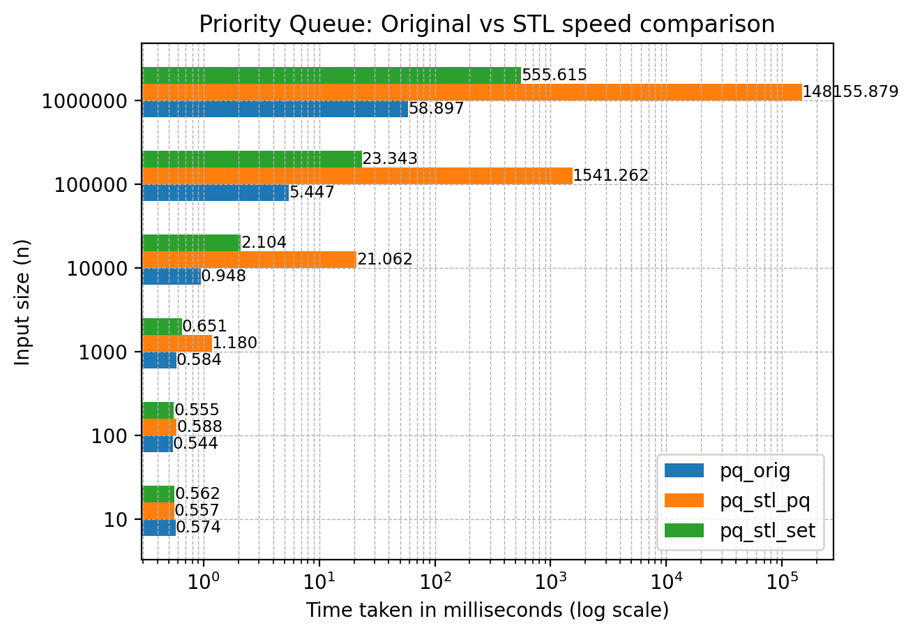
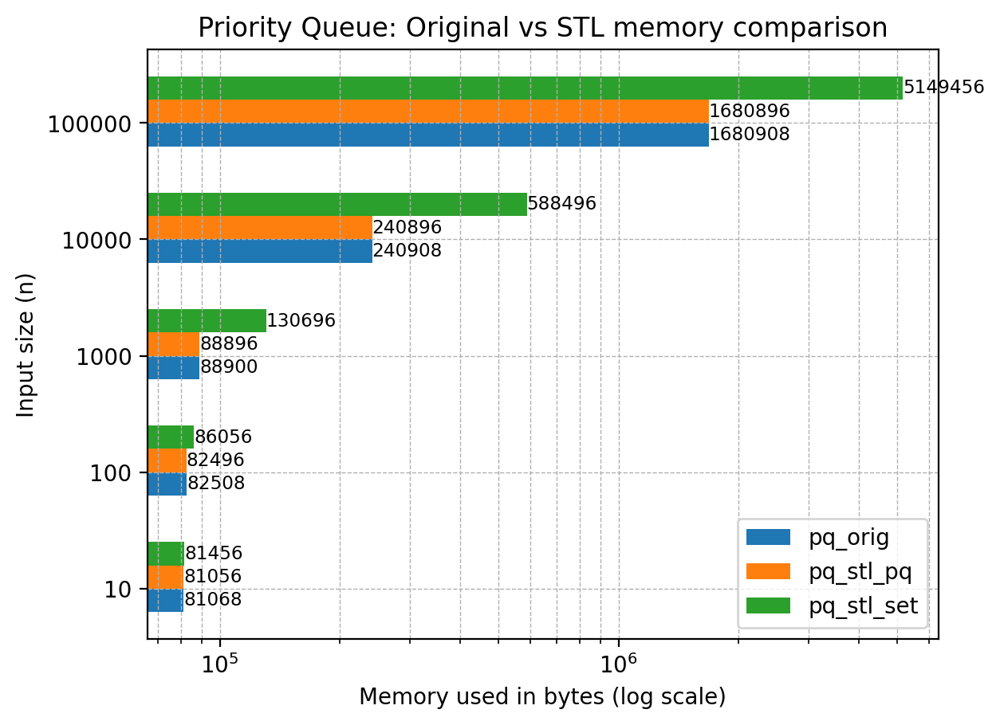

This project was implemented as part of Assignment 1 of Advanced Data Structures and Algorithms (CS5800), 2024 at Indian Institute of Technology, Madras.
Requirements
The C++ source requires g++, clang or an equivalent compiler and is platform independent. Other (Python) tools and scripts are potentially platform dependent. This project has been developed and tested on GNU Linux (5.15.133.1-microsoft-standard-WSL2) and the rest of this document assumes it is being run on a modern Linux distribution.
cmake is required to run make and the Python requirements have been listed in requirements.txt. valgrind is required to run memory benchmarking.
Quick Start
Run make orig to generate the binaries in ./bin/, specifically pq_orig and sort_orig.
pq_orig demonstrates a usage of the class PriorityQueue and its functionalities such as PriorityQueue::insert(), PriorityQueue::remove() and PriorityQueue::peek(), while sort_orig demonstrates PriorityQueue::sort(), an implementation of heap sort, as per the problem statements given below.
If you want to use priority_queue as a library, skip to Usage.
Problem Statements
The following problem statements have been used to demonstrate this project's implementation of priority queue and heap sort.
Priority Queue
Statement
You are given an array of integers and a series of queries. Implement a priority queue data structure using a binary heap to efficiently manage these integers based on their values. The priority queue should support the following operations:
- Initialization: Initialize the priority queue with an array of integers.
- Insertion (Enqueue): Add an integer priority to the priority queue.
- Removal (Dequeue): Remove and return the priority with the highest value (i.e., the maximum priority) from the priority queue.
- Peek: Return the priority with the highest value without removing it from the priority queue.
Input Format
The first line of input contains two space-separated integers n and q, where n represents the number of initial elements in the priority queue, and q represents the number of queries.
The next (second) line contains n space-separated integers A[i], the initial elements in the priority queue.
The following q lines each contain a query. A query can be of the following forms:
- i x: insert the integer x into the priority queue.
- r: remove the top-most element from the priority queue.
- p: peek (or print) the top-most element in the priority queue.
Output Format
For every peek/print query, print a single integer on a new line: the top-most element of the priority queue.
Constraints
0 ≤ n, q ≤ 10⁷
-10⁹ ≤ A[i], x ≤ 10⁹
Sort
Statement
You are given an array of integers. Sort them in place.
Input Format
The first line of input contains one integer n, the number of elements in the array.
The second line of input contains n space-separated integers A[i], the elements of the array.
Output Format
On a single line, print n space-separated integers: the elements of the given array, in sorted order.
Constraints
0 ≤ n ≤ 10⁷
-10⁹ ≤ A[i] ≤ 10⁹
Usage
The PriorityQueue class style is in alignment with C++'s STL containers.
Performance
Correctness
The implementations of priority queue and sort have been stress tested against their STL counterparts. Run scripts/stress_pq.py and scripts/stress_sort.py to verify the same.
Speed
These implementations of priority queue and sort significantly outperform STL, as can be seen from the below charts:


Memory
The memory used is on par with STL, as can be seen from the below charts:

Note: these tests/benchmark use a custom input/output library for better performance.